Autonomous car
Integration of micro:bit modules
Implemented manual and auto modes for seamless control
Capability to navigate various tracks in auto mode.
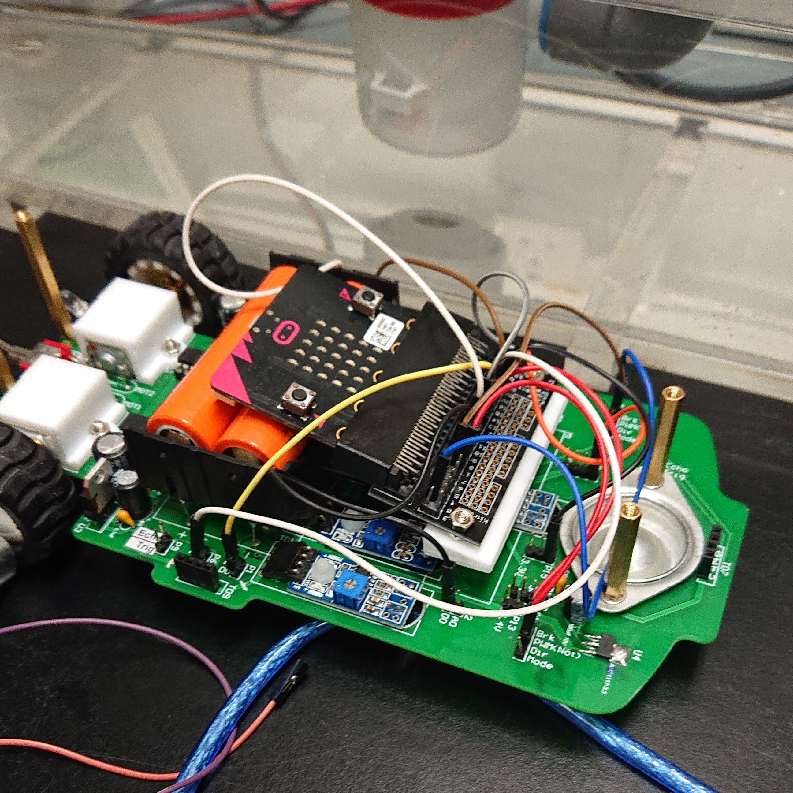
Demo video for navigating different track
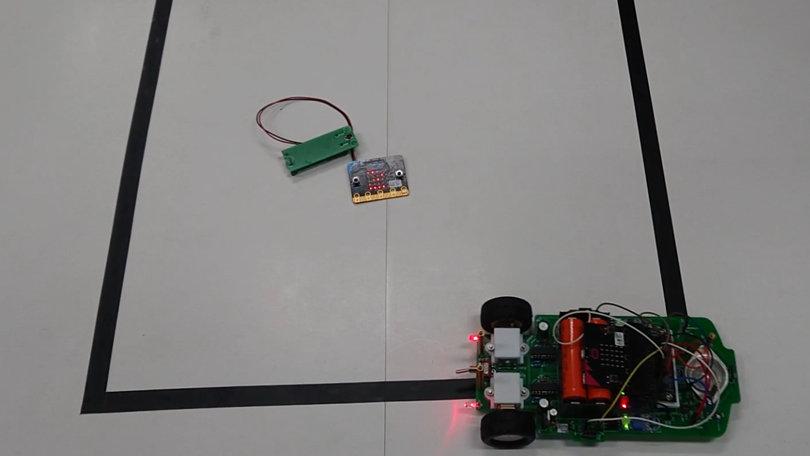
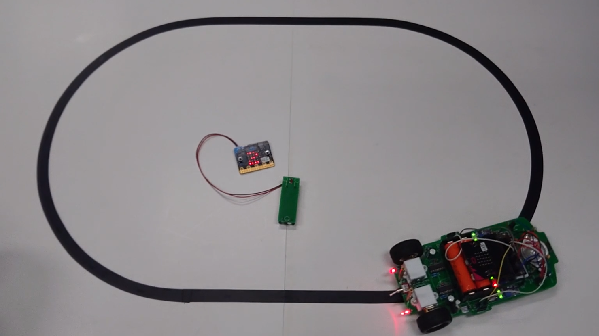
Demo video for manual mode
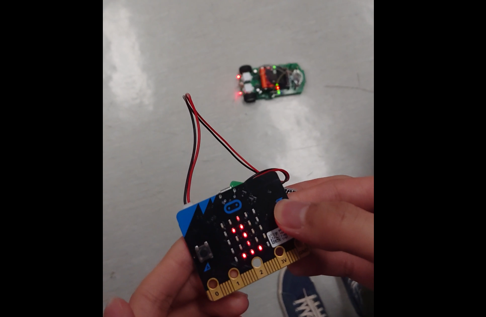
Point of Sales system
The smart retail project utilized the Arduino platform with diverse
components
Performed the seamless integration of cloud services to enable self-service checkout and analysis
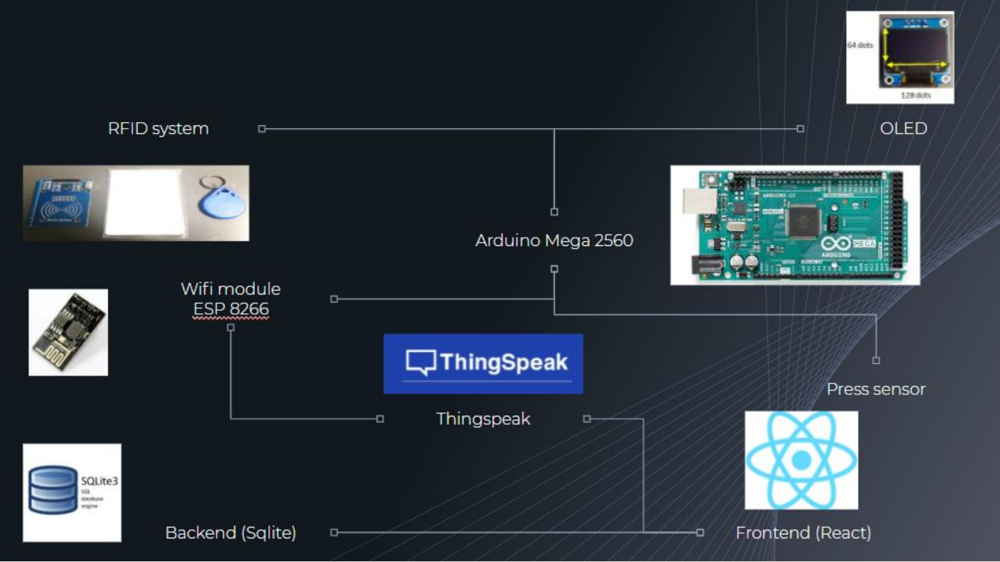
Architecture of the ardruino board
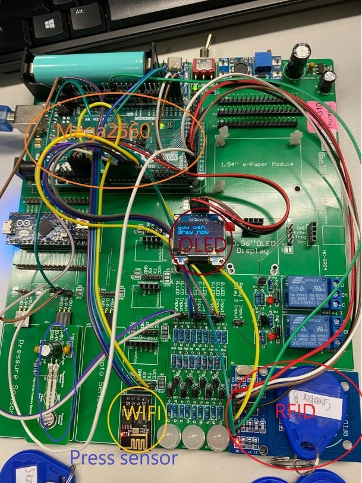
Screenshot for the react.js interface

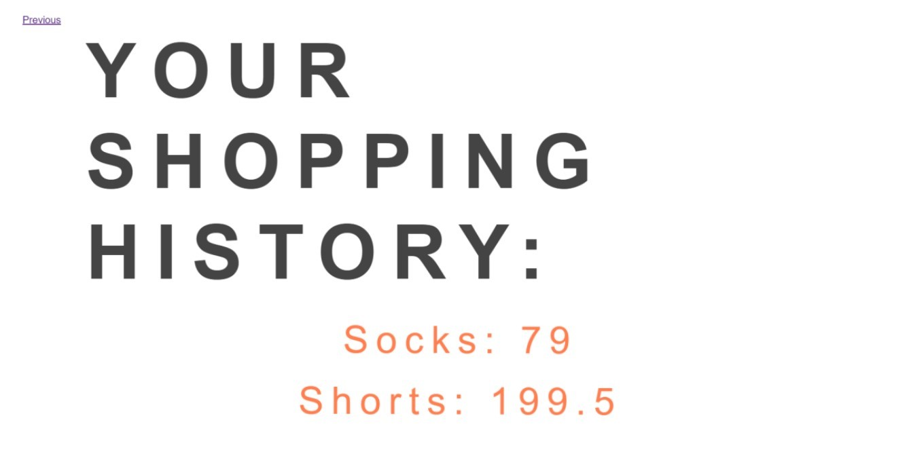
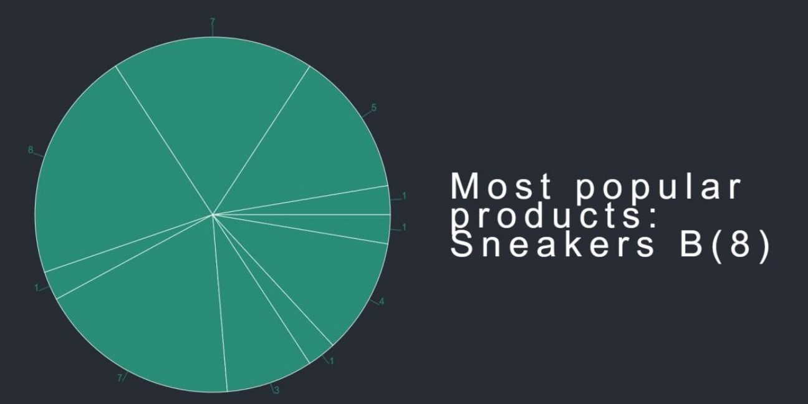
Photonic light-field image processing
A project focused on the comprehensive exploration and application of light field image properties
Developed and implemented features of depth map estimation, post-capture refocusing, perspective changing,
and full depth-of-field construction.

Estimate relative distances by analyzing captured light rays
Enhancing the perception of depth in your photos.

Achieve sharp focus by adjusting the focus point of your image even after taken
Creating pleasing background blur
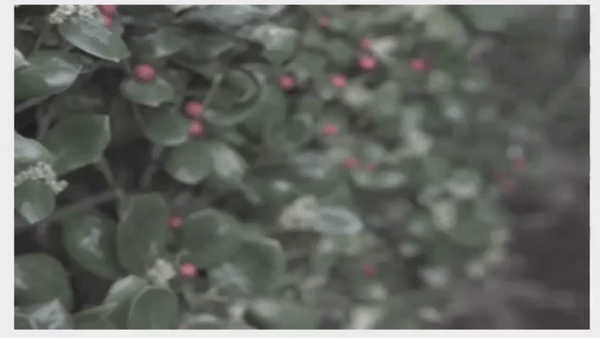
Merge image at different focus to construct photos with extended depth of field
Ensuring exceptional sharpness across various angles
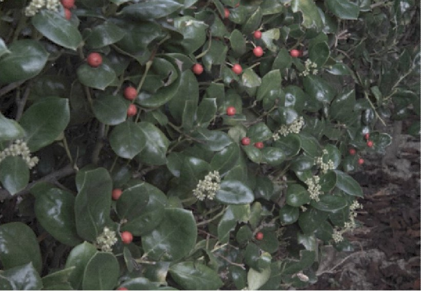
Dynamically adjust the perspective of your photos after capturing them
Exploring different viewpoints and angles
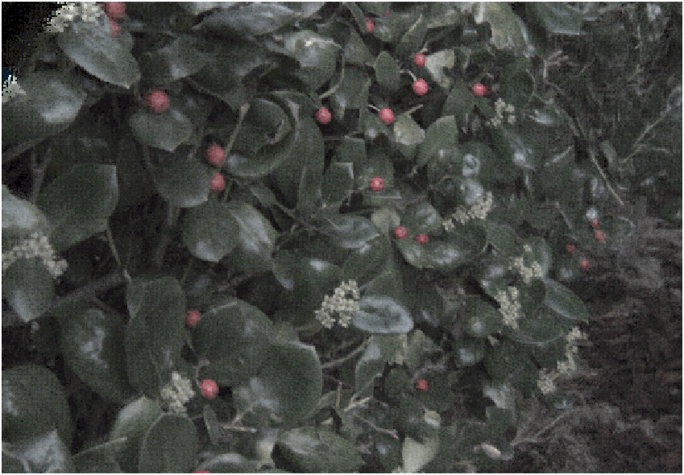